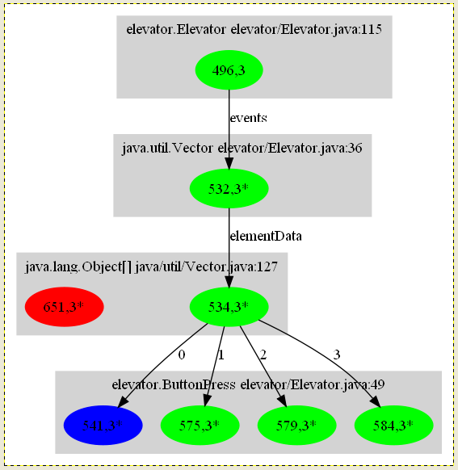

Chord: A Versatile Platform for Program Analysis
Saturday, June 4, 2011, 8:30 am - 12:00 noon
[ Introduction
| Structure of Tutorial
| Learn More ]
Languages that compile to Java bytecode are becoming mainstream on modern
computing platforms, including parallel, mobile, and cloud computing. For example,
mobile apps for the Andriod platform are written in Java, and much of the open-source
software infrastructure for cloud- and cluster-computing (e.g., Apache Hadoop) is
written in Java. These platforms pose unprecedented challenges to software reliability,
security, performance, scalability, energy efficiency, and programmer productivity.
Program analysis can play an important role in addressing these challenges.
Chord is an extensible, open-source, portable program analysis platform that enables
users to productively design, implement, combine, and evaluate a broad variety of
static and dynamic program analyses for Java bytecode. It has the following key
features:
-
It provides various off-the-shelf analyses
(e.g., various may-alias and call-graph analyses; thread-escape
analysis; static and dynamic concurrency analyses for
finding races, deadlocks, atomicity violations; etc.)
-
It allows users to express a broad range of analyses,
including both static and dynamic analyses, analyses
written imperatively in Java or declaratively in Datalog,
summary-based as well as cloning-based inter-procedural
context-sensitive analyses, iterative refinement-based analyses,
client-driven analyses, and combined static/dynamic analyses.
-
It executes analyses in a demand-driven fashion,
caches results computed by each analysis for reuse by other analyses
without re-computation, and can execute analyses without dependencies between them
in parallel.
-
It guarantees that the result is the same
regardless of the order in which different analyses are executed;
moreover, results can be shared across different runs.
The goal of the tutorial is to provide program analysis beginners
and experts alike with systematic and effective techniques for
designing, implementing, evaluating, and combining program analyses.
The tutorial will have the following structure:
- Program Representation
- Intra-Procedural Static Analysis
- Inter-Procedural Static Analysis
- Dynamic Analysis
- Composing Analyses
1. Program Representation
This part of the tutorial will present scope construction
and program representation in Chord.
A scope construction algorithm determines which parts of
the input Java program must be analyzed. The algorithms discussed
will include CHA (Class Hierarchy Analysis), RTA (Rapid Type
Analysis), and dynamic analysis. Techniques used in Chord to resolve reflection
and provide stubs for native methods will also be discussed.
This part of the tutorial will also describe the program
representation used by Chord. It is a three-address (quad)
representation, optionally in Static Single Assignment (SSA) form,
that is more suitable for analysis than Java bytecode.
2. Intra-Procedural Static Analysis
This part of the tutorial will explain how to rapidly implement
a basic static analysis in Chord. A classic yet realistic static
analysis, such as a flow- and context-insensitive (Andersen's)
points-to analysis with on-the-fly call graph construction, will be
presented. This part will introduce three of the many
program analysis templates that Chord provides: Program Domain,
Program Relation, and Datalog Analysis.
- A program domain
is a finite set of artifacts of a particular kind from the
program being analyzed, e.g., a domain M denoting the set of
all methods in the program, a domain H denoting the set of all
object allocation sites, etc.
- A program relation is a relation over one or more program
domains, e.g., a relation containing each pair (m,h) such that
object allocation site h in H is contained in the body of
method m in M.
- A Datalog analysis is a set of rules that declaratively
specifies how a set of output relations is computed from a set of
input relations. For the Datalog analysis presented in this part of
the tutorial, all domains and input relations will be constructed
imperatively in Java and will denote basic program facts, but
subsequent parts of the tutorial will show how these domains and
relations could be produced by other (Java or Datalog) analyses
themselves.
3. Inter-Procedural Static Analysis
This part of the tutorial will explain how to implement
context-sensitive static analyses in Chord. Chord provides two
frameworks for context-sensitive static analysis: cloning-based (e.g.,
k-CFA, k-object-sensitivity, etc.) and summary-based (i.e., the
Reps-Horwitz-Sagiv inter-procedural dataflow analysis framework).
Both these frameworks are highly parametric. For instance, the
cloning-based framework allows varying degrees of context- and
object-sensitivity to be used for different parts of the program
being analyzed.
4. Dynamic Analysis
|  |
Runtime heap output by a dynamic analysis.
This part of the tutorial will explain the dynamic analysis
capabilities of Chord. These capabilities are the most versatile of
any existing dynamic analysis framework for Java bytecode, particularly the
ability to instrument the entire JDK (including classes in package
java.lang). They include support for:
- offline as well as load-time instrumentation of Java bytecode;
- processing of dynamic analysis events online in the same JVM or
offline in a different JVM with an uninstrumented JDK (the latter
circumvents performance and correctness problems that can arise if a
single JVM with an instrumented JDK is used to generate and handle
events); and
- allowing the event-generating and event-handling JVMs to run
either serially (by storing the entire trace of events to a regular
file) or in parallel (by streaming the trace of events in a piped
file).
Besides explaining these capabilities, this part of the tutorial will
also explain the diverse purposes for which dynamic analysis in Chord
has been used, including:
- a methodology of how dynamic analysis can be
used to narrow the design space of static analysis, e.g., how dynamic
analysis can be useful to quickly eliminate, even without implementing
the static analysis, program abstractions that are inherently
imprecise for the client at hand (e.g.,
[OOPSLA'10]);
- how dynamic analysis can be used
to perform predictive testing, with examples of dynamic race,
deadlock, and atomicity violation checkers implemented in Chord (e.g.,
[FSE'10]); and
- how dynamic analysis can be
combined with static analysis in powerful and complementary ways,
e.g., how dynamic analysis can be used to efficiently guess sparse
yet precise program abstractions for a static analysis to use
(e.g., [POPL'12]).
5. Composing Analyses
This part of the tutorial will explain how to compose disparate
analyses written in Chord to build advanced analyses productively and
execute them efficiently and reliably. Chord adapts
the Habanero Concurrent
Collections (CnC) declarative parallel language and the
Habanero Java runtime
for this purpose.
This aspect, which gives the Chord platform its versatility, is
perhaps its most distinctive compared to other program analysis
frameworks. This part of the tutorial will present the following:
- Every analysis template predefined in Chord---a
Program Domain, a Program Relation, a Datalog Analysis, an RHS
Analysis, a Dynamic
Analysis, etc.---is a specialized form of a generic Program Analysis,
which can be an arbitrary piece of code.
- Individual analyses can be linked together via
lightweight, user-specified data- and control-dependencies. Many of
these dependencies are implicit for analyses derived from the
predefined analysis templates and thus require no additional user
annotations.
- The above dependencies can be used to build
advanced analyses such as iterative refinement-based analyses,
client-driven analyses, and combined static/dynamic analyses.
-
The resulting analyses are automatically executed efficiently and reliably, namely,
analyses are executed in a demand-driven manner, results of analyses
are cached for reuse without re-computation, and independent
analyses are scheduled in parallel while ensuring determinism.
|
The dependence graph of a pointer analysis in Chord.
|
About the Presenter
Mayur Naik is
a researcher at Intel Labs Berkeley. His research interests lie in
the areas of programming languages and software engineering with a
current emphasis on program analysis and its applications to problems
in parallel, mobile, and cloud computing. He obtained his PhD in computer
science from Stanford University in 2007.
The tutorial will build upon his experience using Chord to
implement advanced program analyses (e.g.,
[POPL'12, PLDI'11, FSE'10,
ICSE'09, PLDI'06]),
perform extensive empirical studies (e.g.,
[OOPSLA'10, POPL'11]),
and build complex systems involving program analysis (e.g.,
[EuroSys'11, NIPS'10, ICSE'11]).
Resources
References
The below references describe tools, systems, and frameworks that have
been built using Chord and are publicly available.
| [POPL'12] | Mayur Naik, Hongseok Yang, Ghila Castelnuovo, Mooly Sagiv.
Abstractions from Tests. |
| [EuroSys'11] | Byung-Gon Chun, Sunghwan Ihm, Petros Maniatis, Mayur Naik, and Ashwin Patti.
CloneCloud: Elastic Execution between Mobile Device and Cloud. |
| [ICSE'11] | Ariel Rabkin and Randy Katz.
Static Extraction of Program Configuration Options. |
| [PLDI'11] | Percy Liang and Mayur Naik.
Scaling Abstraction Refinement via Pruning. |
| [POPL'11] | Percy Liang, Omer Tripp, and Mayur Naik.
Learning Minimal Abstractions. |
| [NIPS'10] | Ling Huang, Jinzhu Jia, Bin Yu, Byung-Gon Chun, Petros Maniatis, and Mayur Naik.
Predicting Execution Time of Computer Programs Using Sparse Polynomial Regression. |
| [OOPSLA'10] | Percy Liang, Omer Tripp, Mayur Naik, and Mooly Sagiv.
A Dynamic Evaluation of the Precision of Static Heap Abstractions.
|
| [FSE'10] | Pallavi Joshi, Mayur Naik, Koushik Sen, and David Gay.
An Effective Dynamic Analysis for Detecting Generalized Deadlocks.
|
| [ICSE'09] | Mayur Naik, Chang-Seo Park, Koushik Sen, and David Gay.
Effective Static Deadlock Detection.
|
| [PLDI'06] | Mayur Naik, Alex Aiken, and John Whaley.
Effective Static Race Detection for Java. |